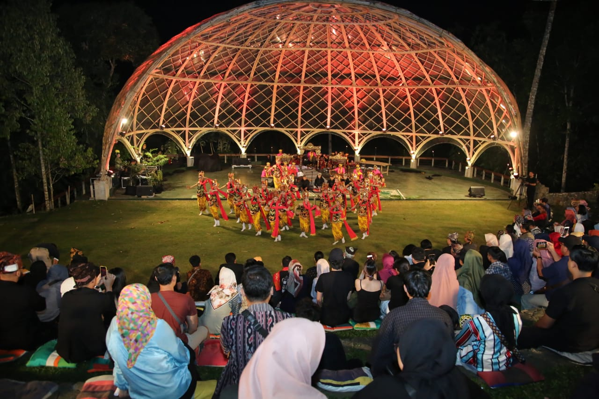

Banyuwangi adalah sebuah kabupaten di ujung timur Jawa, Indonesia
Dikenal sebagai tujuan wisata yang menawarkan beragam atraksi alam dan budaya.
Banyuwangi Festival (B-Fest) telah menjadi ikon atraksi pariwisata bagi kabupaten paling ujung timur Pulau Jawa. Pada tahun ini, pemkab kembali menggelar ratusan event yang terangkai dalam kalender wisata yang sudah tidak asing di telinga publik nasional.
Gandrung Sewu merupakan gelaran festival tahunan tari Gandrung kolosal di Kabupaten Banyuwangi, Jawa Timur, yang merupakan salah satu bagian Banyuwangi Festival.
Tour of Kemala merupakan event balap sepeda yang bertaraf nasional dan internasional. Gelaran balap sepeda ini dapat mempromosikan pariwisata Banyuwangi dan meningkatkan prestasi para atlet sepeda Indonesia.
BEC merupakan parade busana etnik Banyuwangi yang menampilkan puluhan peraga dengan berbagai busana etnik kreasi kontemporer.